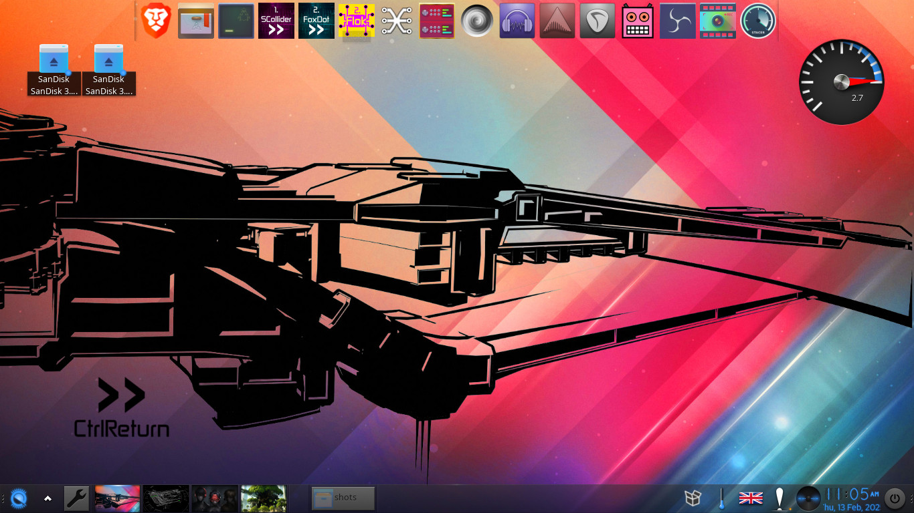
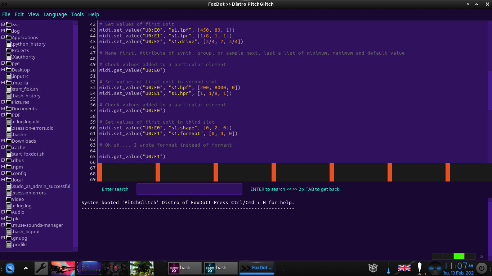
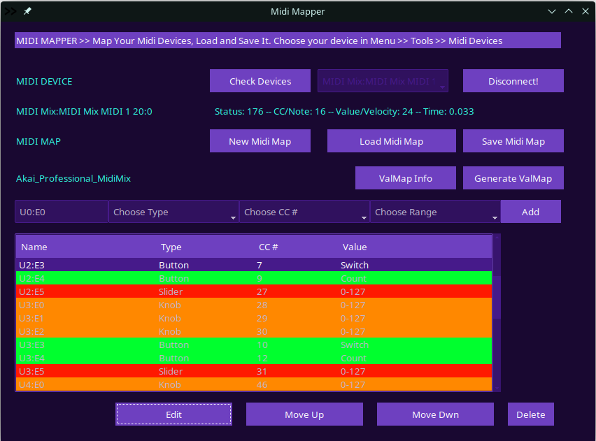
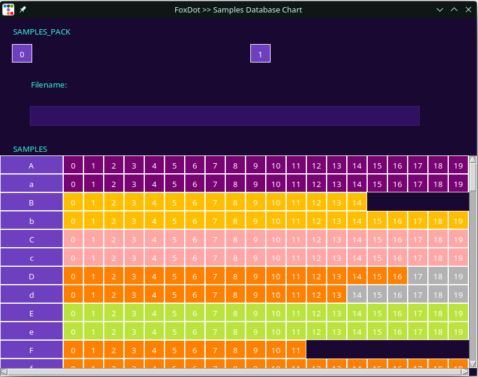
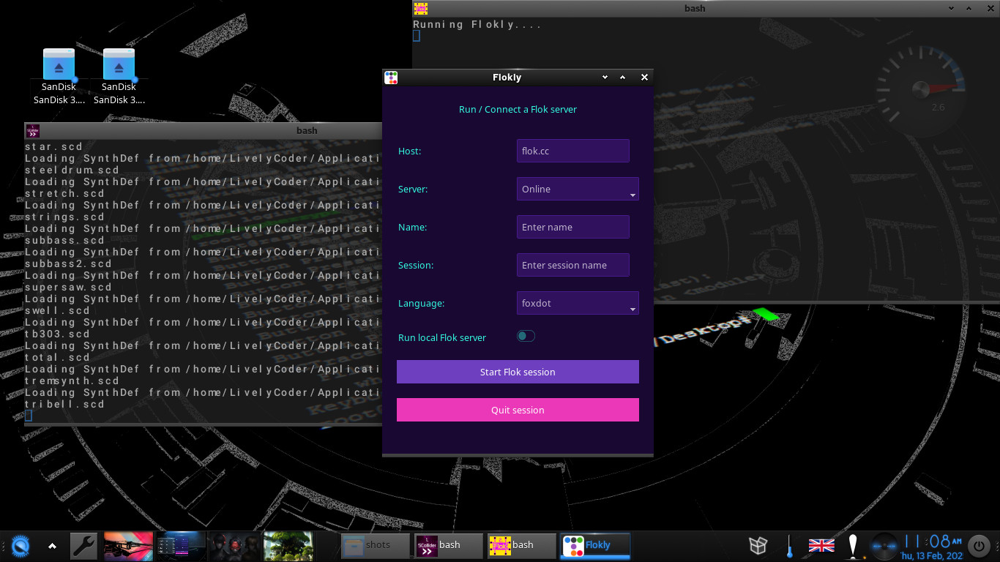
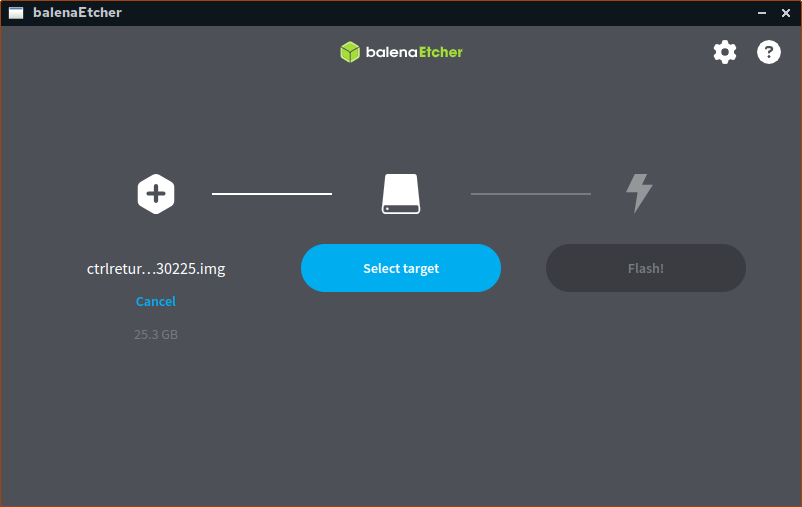
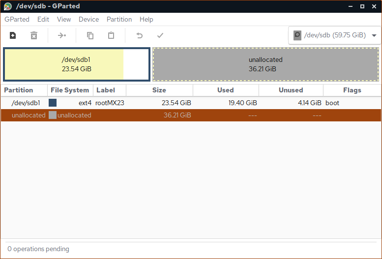
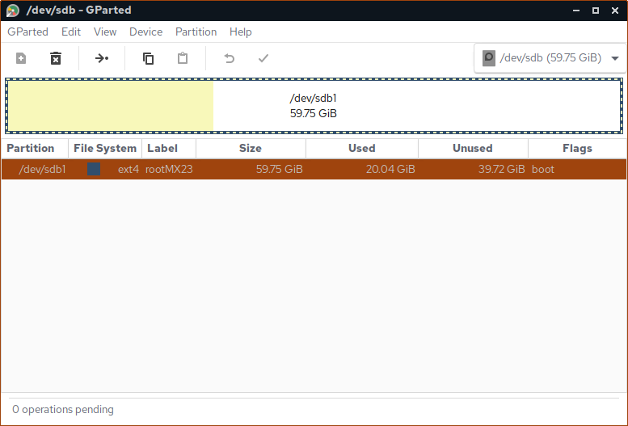

A specially crafted Linux distribution designed to enhance the experience of music and visual creators at the CtrlReturn meetup event.
is a specially crafted Linux distribution designed to enhance the experience of music and visual creators at the CtrlReturn meetup event. It is based on AV Linux, but tailored for creative coders, this distro comes preloaded with everything you need to dive straight into generative art, live coding, and audiovisual performances—without the hassle of setup or installation procedures. Whether you’re a novice or an experienced coder, the streamlined environment ensures a smooth and seamless start.





The distribution is available for download and can be easily extracted to a fast-reading USB stick (minimum 32 GB). Follow the instruction below to install the Distro onto an USB Stick or Harddrive. After this, simply plug in, boot, and start creating at the event, with all essential tools and software preconfigured for your convenience. From sound synthesis and sequencing to real-time visual generation, CtrlReturn Linux provides a ready-to-go platform to explore, create, and collaborate with fellow creative coders.
USB Stick (minimum 64GB) Laptop/PC with Linux, Windows or Mac
Distro img file (gzip archive) Flashing Images to USB Software (BalenaEtcher)

For this, use a partition manager in Win, Mac, or in Linux to extend your Distribution partition to the entire size of your USB stick. Usually you need to umount your drive with RMB >> Unmount and then Resize/Move:
Before

After

Now you can boot your computer, while holding down e.g. the F12 Key (Can be F8, F10, F7 depend on Computer) in order to enter the Boot Menu. Select your USB Stick.